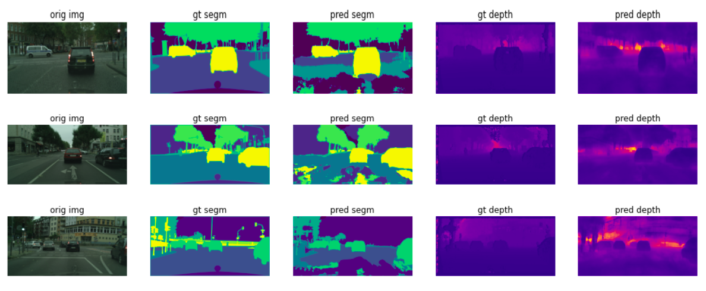
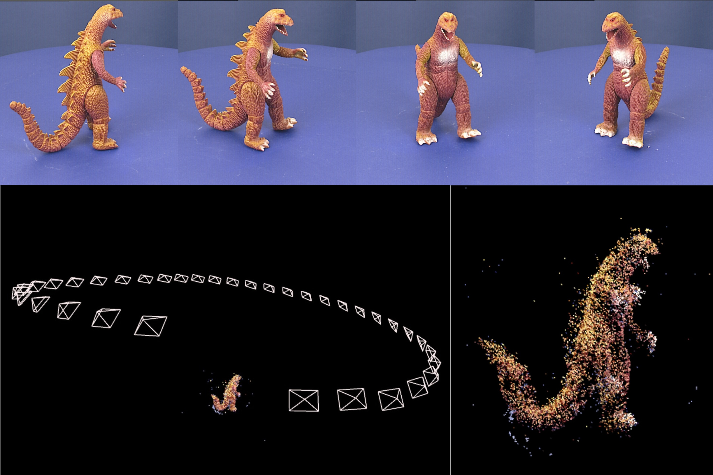
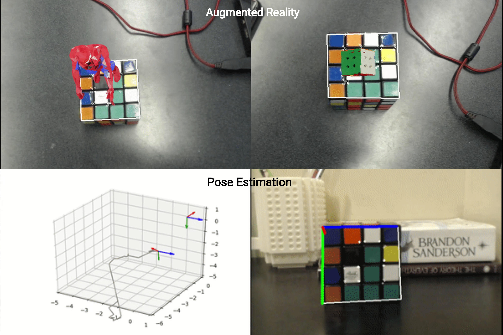
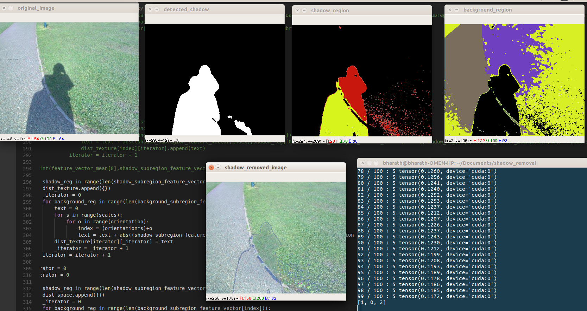
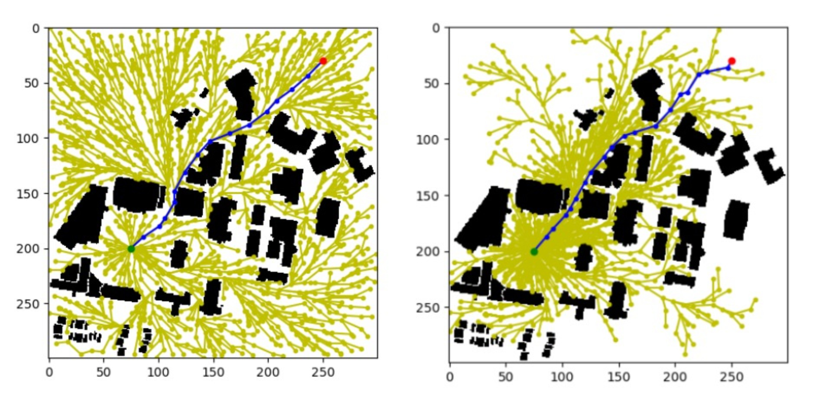

I am a software engineer working on HD mapping for autonomous vehicles at Aurora. My work spans HD map generation, localization, deep learning pipelines, and 3D geometry algorithms for autonomous driving. My background includes perception, SLAM, and robot manipulation, with experience across autonomous vehicles, drones, and manipulators. I am proficient in C++ and Python, and passionate about building reliable, high-quality systems at the intersection of computer vision and robotics.
Experience
Work
- Developed HD map generation and localization workflows for Aurora's autonomous driving system. Maintained scalable HD map infrastructure and developed geometric and semantic validation algorithms to ensure high quality outputs.
- Engineered automated pipelines leveraging deep learning and geometric algorithms to extract lane boundaries and traffic lights/signs from LiDAR and camera data.
- Developed perception and navigation modules for drone-based warehouse inventory product and helped progress it to deployment testing at 3 prominent warehouses in the USA.
- Engineered barcode detection and sensor fusion pipelines. Worked on Mask-RCNN/MultiNet models and ORB-SLAM for aisle/bin segmentation and localization. Delivered RRT* planner module for drone surveillance product.
Education
M.S. Robotics Engineering
B.Tech. Instrumentation and Control Engineering · Minor in Computer Science Engineering
Publications

A Benchmarking Study of Vision-based Robotic Grasping Algorithms
International Conference on Robotics and Automation (ICRA) 2026 — Accepted IEEE Robotics and Automation Magazine (RAM), 2025A platform-agnostic benchmarking pipeline to evaluate vision-based grasp detection algorithms across various robot and sensor configurations. Implements and evaluates learning-based (GG-CNN, ResNet) and analytical (Point Cloud Top Surface, Gripper Mask-based) algorithms.
Projects
Open3D — Open Source Contribution
Mar 2024 – PresentLanded pull requests enhancing mesh processing algorithms by adding UV map interpolation functionality and improving the TriangleMesh operator to handle UV maps more effectively.
LiDAR Odometry Estimation using PointNet
Developed a learning-based odometry regression algorithm utilizing the KITTI lidar dataset. Built a PointNet-based architecture to filter dynamic objects and estimate 6D poses. Implemented feature matching in depth space, achieving results comparable to state-of-the-art while outperforming ICP.

Semantic Segmentation & Depth Estimation via Multi-Task Learning
Implemented and optimized an FCN-based MTL architecture achieving real-time inference at 12 FPS. Achieved 81% MeanIOU and 4m RMSE on CityScapes. Modularized the implementation to incorporate custom encoders/decoders.

Structure From Motion — Oxford Multi-View Dataset
Implemented ORB feature matching and Essential Matrix estimation for relative pose recovery. Built feature triangulation and bundle adjustment to construct a sparse 3D scene reconstruction.

Augmented Reality & 3D Pose Estimation
Developed AR for 3D objects with perspective projection and homography. Implemented pose estimation using the Perspective-N-Point algorithm and improved performance with Kalman filtering, using a Rubik's cube as a fiducial.

Shadow Detection & Removal
Implemented an unsupervised segmentation algorithm for shadow/sub-region segmentation. Tailored a pipeline to match sub-regions and transfer illuminance based on a Gabor filter metric on the SBU shadow dataset.

Laser SLAM for an Indoor Agricultural Robot
Developed a mobile robot that autonomously navigates indoor environments with laser SLAM using Kinect. Built plowing, sowing, and spraying mechanisms using Gmapping-based localization.

Primer on Path Planning Algorithms
Implemented and compared graph-based and sampling-based motion planning algorithms including RRT, RRT*, Informed RRT*, PRM, D*, A*, and Dijkstra with a detailed comparative analysis.
Skills
Areas of Interest
Languages
Libraries & Tools
Courses
Research
- Benchmarked grasp detection algorithms under various experimental conditions (Panda, UR5, RealSense, ZED 2i). Developed open-source software and simulator to benchmark grasping algorithms.
- Implemented vision-based algorithms (GG-CNN, ResNet-based, Point Cloud Top Surface-based, Gripper Mask-based) for benchmark evaluation.
- Developed a PointNet-inspired odometry regression model utilizing the KITTI lidar dataset. Built a two-stage architecture to filter dynamic objects and estimate 6D poses.
- Achieved results comparable to state-of-the-art while outperforming ICP in inference time.
Internships
- Incorporated camera/lidar calibration module into the autonomy stack.
- Developed an in-house performance and memory profiler for Brain Corp's SLAM system.
- Optimized lane boundary curve fitting in the HD Map creation pipeline, significantly boosting performance.
- Developed visualization and metric evaluation tools for the curve fitting algorithm.
- Created a simulator for drone-based warehouse inventory, extending the capabilities of Microsoft AirSim. Integrated the simulator into the codebase to facilitate testing of drone missions.